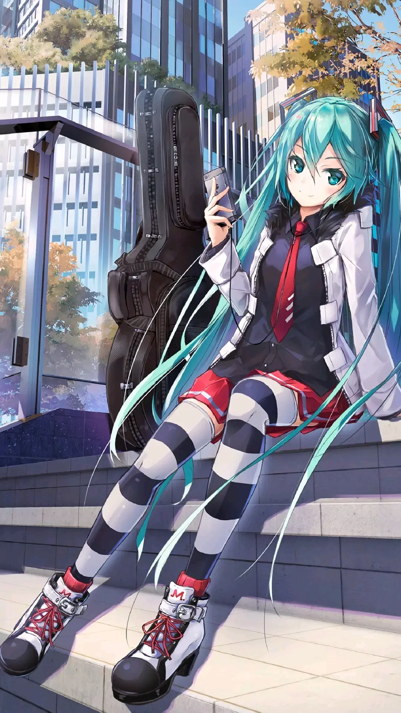

∇初音未来
Hatsune Miku
日常 4-28 9520阅读 3894点赞 265评论

很多人第一次听说初音未来，是因为《甩葱歌》。
这首歌不仅让她得到了“葱娘”的昵称，还让超多人被她的歌声震惊：
天哪噜！这么卡哇伊的声音怎么可能是虚拟的！
在一开始，她是一款音乐合成软件
但是在发售后，这个绿色双马尾的歌姬萌化了霓虹国
人们纷纷制作歌曲、绘画、动画、同人文……
就这样，公主殿下C位出道了，一出道就是十二年。

如果说初音未来的诞生是一场奇迹，那么让这个奇迹延续至今的，是以爱为名的力量。

如果说初音未来的诞生是一场奇迹，那么让这个奇迹延续至今的，是以爱为名的力量。
谁都不曾听过的初始之音，
来自未来的访客，
流水的偶像，
铁打的初音未来。
机械的歌声所孕育出的感动，
是人类所无法理解的事物。
世界第一公主殿下
Copyright © 2020.Company name All rights reserved返回首页